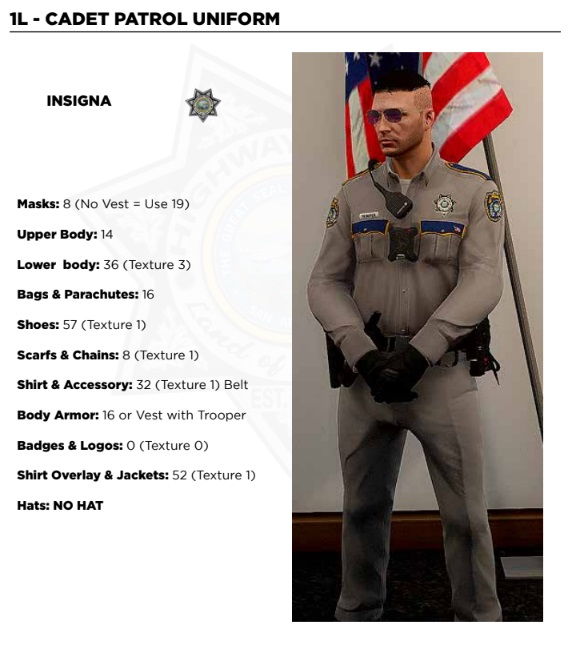
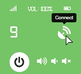

Onboarding Cadets Guide
Introduction
Note to the cadet the following:


Note to the cadet the following:
(1)
【👋】welcome-center
Here you can find the people who have joined the server with the date,
time and name.
(2)
【📢】announcements
Within this channel, Command Staff will post important information
regarding the department.
(3)
【📢】press-releases
This channel is where you can find all of the SAHP Press Releases that
are written up. These releases will cover a variety of topics related to
the SAHP.
(4)
【📁】documentation
Here you can find all important documents within the department. => E.G
SOP, Application, Roster, Report Form.
(1)
【💬】department-chat
This is the main channel for conversing with fellow members and staff.
(2)
【🔥】memes
Post your top quality memes for the department to see, Keep a level of
appropriateness.
(3)
【📷】media-center
Any media, clips and pictures you'd like to share with the department
post here.
(4)
【📥】suggestions
Use this channel to suggest things to the department staff and voice
your opinion.
(5)
【📢】shout-outs
If you work hard enough in the field supervisors will notice! Here you
can be shouted out for your hard work.
(1)
【📢】training-announcements
Here upcoming planned trainings will be posted, Please react your
attendance when one is posted.
(2)
【🚗】ride-along-request
This channel is where you will request a one of the 3 types of ride
alongs. Click the appropriate button in the channel and a ticket will be
made with further information.
(3)
【📝】fto-application
The application to apply to become a FTO is found here, As well above
results of the application will be posted.
(4) 【🪑 】FTO Waiting Room
Once you request a ride along you will communicate with the FTO who has
claimed the ticket inside of these channels, Join the waiting room then
you will be dragged.
(1) Log into the
FivePDRP CAD
with your discord account.
(2) Log into SonoranCAD - if not already please make an account
(3) Type in the community code found in the
『💻』cad-mdt
channel along with the approrpiate permission code.
(4) Enter the `Police` dashboard
(1) Choose the red marker that states `NOT SET` in the top left of the page

(2) Change all information to appriopriate fields. - NOTE: some spots may be left blank.


This is the CAD dashboard, you will be able to set yourself 10-6, 10-7, 10-8, etc. This is also where your panic button is and where your active calls are shown. Don’t forget to press the “Self Dispatch” button if there is no active dispatch online.
If you choose the "lookup" button, you will be prompted with the following. Input the name, or switch to the plate section and search the plate to get returns.


Navigate to F1 => Player Related Options => MP Ped Customisation => Create Character => Character Clothes then utilised the numbers listed below.
After this is done you can customise the appearance of your character itself through the Character's Inheritence and Character's Appeareance menus.
The uniform for Cadets is as followed:

IMPORTANT:
Ensure that the cadet is wearing the long sleeve shirt and no hat. These are for Senior Troopers and Troopers respectively.
Navigate to F10 => LEO Toolbox => Vehicles => San Andreas Highway Patrol.
If you wish to change the way that the vehicle looks, make sure to go to F1 => Vehicle Related Options => Vehicle Otions.
Change the livery through the Vehicle Livery.
Change the extras of the vehicle including ram bars, lightbars, etc through Vehicle Extras
NOTE: some vehicles may have a `matte` look to the vehicle upon initial spawning. To change this you can change the colour to black.
NOTE: Cadets can only use white top vehicles. Cadets can only use lightbar vehicles. Check the SOP - Section 4.2 for further information.
10 Codes are utilised to ensure that clear communication is used through radio. This will make sure that communication is more effetive
| Code | Meaning |
|---|---|
| 10-8 | In Service |
| 10-7 | Out of Service |
| 10-6 | Busy - Unavailable Unless Urgent |
| 10-23 | On Scene |
| 10-97 | En Route |
| 10-51 | Request For Tow |
| 10-52 | Request For Medical |
| 10-53 | Request For Fire |
| 10-71 | Request For Supervisor |
| 10-9 | Repeat Traffic |
| Code 1 | Non-Emergent Response |
| Code 2 | Emergency Response - Lights |
| Code 3 | Emergency Response - Light and Sirens |
| Code 4 | Scene Secured By Police |
| Signal 100 | All Non-Priority Taffic To Be Held |
| 10-3 | Hold All Non-Emergency Traffic |
Utilizing the Phonetic Alphabet is very important when sharing
information to other units to make sure every letter is heard
clearly.
Most cases the Phonetic Alphabet will be used when reading out
Vehicle Plates to other units or Dispatch. Can also be used in
other situations like describing suspects.
(White Male = Whiskey Mike)
| English Character | Phonetic Alphabet Pronunciation |
|---|---|
| A | Alpha |
| B | Bravo |
| C | Charlie |
| D | Delta |
| E | Echo |
| F | Foxtrot |
| G | Golf |
| H | Hotel |
| I | India |
| J | Juliett |
| K | Kilo |
| L | Lima |
| M | Mike |
| N | November |
| O | Oscar |
| P | Papa |
| Q | Quebec |
| R | Romeo |
| S | Sierra |
| T | Tango |
| U | Uniform |
| V | Victor |
| W | Whiskey |
| X | X-Ray |
| Y | Yankee |
| Z | Zulu |
Navigate to the following F9 => Type in the communication channel desired => Click the connect icon.
Keep all traffic to 10 Codes and short descriptions only. Radio Transmissions should be kept to a minimum length in order to prevent the radio from becoming backed up with unnecessary traffic. All Radio Traffic should be clear, succinct, and concise.
If you hear any unit calling in priority traffic, hold your traffic. This is especially important in the middle of a priority situation. Even though the events in-game may be extremely hectic, it is vital not to have multiple people speaking at one time. One unit at a time should be relaying all the necessary to dispatch about the priority. During a priority in most cases the active Dispatcher will put the RTO in a Signal 100 meaning all Radio traffic should be in reference to the current priority.
1. Maintain RTO at all times
2. Keep radio traffic to a minimum. When talking on the radio, it's critical not to talk over other officers and dispatchers
3. It is important not to yell or laugh into the mic. Remain calm during your transmissions so information is correctly understood.
4. You can modify the volume of the radio on the dial above the menu.
5. Common radio channels are as followed:
| Channel | Channel Info |
|---|---|
| 5 | LSPD |
| 7 | BCSO |
| 9 | SAHP |
| 11 | LSSD |
| 13 | SWAT |
| 15 | FIRE / EMS |
| 17 | Game Warden |
FINAL REPORT:
Click the following button to generate report